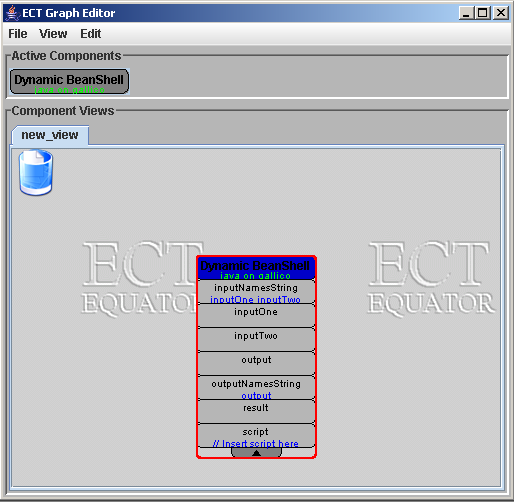

BeanShell is a java-based scripting language and IDE that has been designed for easy integration into other applications. BeanShell has been integrated into ECT through the addition of the DynamicBeanShell component, which is capable of interpretting a BeanShell script. This tutorial briefly describes how to use this component, but for details of how to program in BeanShell, you should read the documentation on their project web-site.
For every script you want to integrate into an ECT installation, you need to create one instance of the DynamicBeanShell component to interpret this script. This can be located in the "behaviour/scripting" category in the CapabilityBrowser. Figure 1 below shows an example of DynamicBeanShell immediately after instantiation.
The first task when configuring this instance
is to define the properties that will be manipulated
by the script you want to use. For example, if you
wanted to use a simple script that concatenated
two input strings to produce an output string, you
might want to define three properties - called
inputOne, inputTwo and output.
To add a new set of input properties, enter
the following text into property
inputNamesString:
inputOne inputTwo
(ie a list of property names, each of which
is seperated by a space). Similarly, enter the
following text into property outputNamesString:
output
After entering these details, three new properties should be added to the component instance, as shown in figure 2 below:
Once these properties have been added, then they can be manipulated by a script. For the simple concatentation example described above, such a script might look like this:
output = inputOne + inputTwoTo configure your DynamicBeanShell instance with this script, simply paste it into its script property. This script is then executed every time either inputOne or inputTwo are modified. Figure 3 below shows an example of this instance in use.
One tricky issue when using BeanShell scripts in ECT is working out the datatypes of any values provided through input properties of a DynamicBeanShell instance. This is because the datatypes of such values will depend upon the source that has been used to create them. For example, a value entered directly into a DynamicBeanShell input property through the graph editor interface will always appear to the script as an instance of java.lang.String, even if the original value entered by the user was a number - so such a script might have to convert this value back to a number if this was the case. The datatypes of values generated by other components depend upon how the components have been written - so, for example, if you connect the connected property of an instance of PhidgetInterfaceKit to an input property of a DynamicBeanShell instance, then any value provided on this input property would be typed as an instance of java.lang.Boolean. There are many other examples of datatypes used by components in ECT - which might include java.lang.Integer, java.lang.Double etc. See the Component development reference for a list of available datatypes that might appear in BeanShell scripts.
These issues are important, because the operation of a particular script can be affected by the datatypes of values with which it is supplied. For example, in the simple concatentation example given above, this script will only work as expected if values typed as java.lang.String have been supplied through properties inputOne and inputTwo. If values with any other types are supplied, then results may not be as expected. So how can you tell what types of values have been supplied to a particular input property?
One possibility is to add an extra output property
to your DynamicBeanShell instance, called type,
and to add a line to your script that looks
something like this:
type = <input_name>.getClass().getName()
When this script is run, then the type property of
your DynamicBeanShell instance would be set to the name
of the class of the value on your chosen input property.
For example, it might be set to java.lang.String
if this value was a string. This addition to the script
can then be removed - as assuming that no changes are
made to your installation, any other values supplied
by the same mechanism will have the same datatypes as
the one you have just discovered
Additionally, once the class of a particular value is known, then your
script can be modified to perform any data conversion
operations if necessary. So, if you find that in a particular
installation involving a DynamicBeanShell instance that strings
are always provided to a particular beanshell property, and
that your script needs to work with integers, you can convert
the string to an integer using
intValue = Integer.parseInt(stringValue)